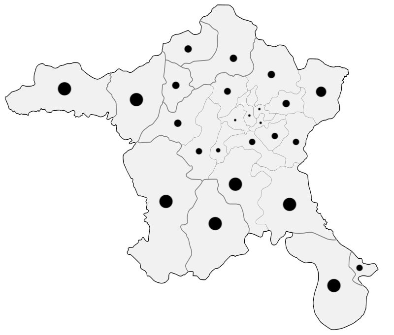

Click on the dots to learn the name of the district!
Since it doesn't show the name before clicking, you can also use this map to memorize the districts
| Name | Population | Area (km2) |
|---|---|---|
| Altındağ | 407.675 | 123 |
| Ayaş | 13.093 | 1041 |
| Bala | 22.966 | 1851 |
| Beypazarı | 48.732 | 1697 |
| Çamlıdere | 8.350 | 782 |
| Çankaya | 949.265 | 483 |
| Çubuk | 91.363 | 1198 |
| Elmadağ | 44.236 | 647 |
| Etimesgut | 606.472 | 273 |
| Evren | 2.965 | 222 |
| Gölbaşı | 142.961 | 1364 |
| Güdül | 8.155 | 540 |
| Haymana | 27.298 | 2164 |
| Kahramankazan | 57.913 | 547 |
| Kalecik | 12.502 | 1110 |
| Keçiören | 942.884 | 159 |
| Kızılcahamam | 26.968 | 1623 |
| Mamak | 682.420 | 321 |
| Nallıhan | 26.961 | 2079 |
| Polatlı | 127.526 | 3618 |
| Pursaklar | 159.676 | 169 |
| Sincan | 561.411 | 880 |
| Şereflikoçhisar | 33.475 | 2155 |
| Yenimahalle | 703.809 | 219 |